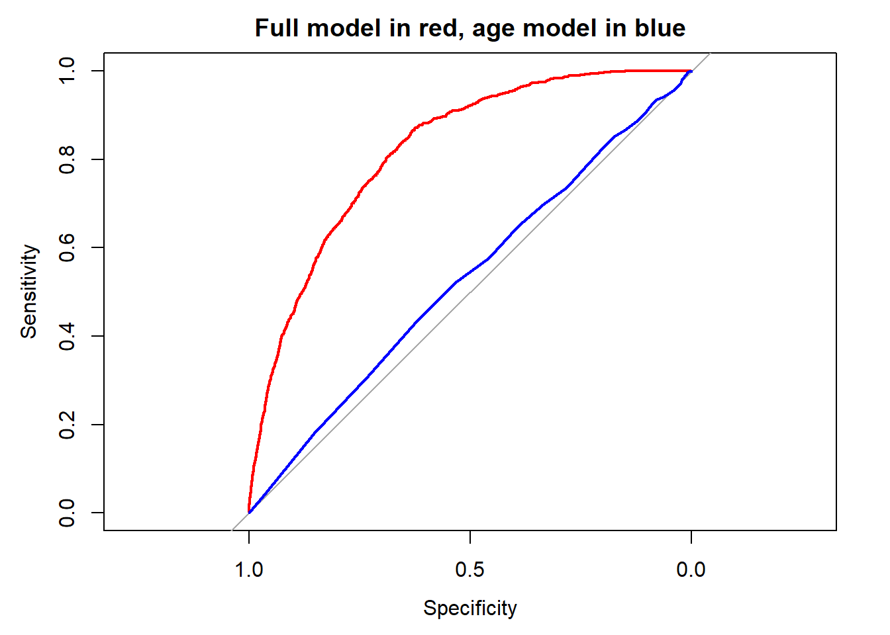
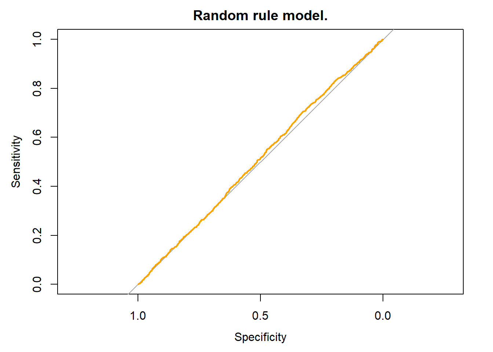
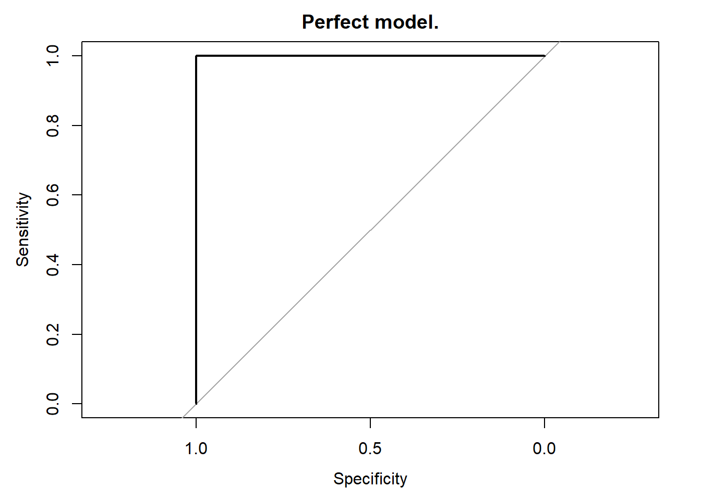

Credit risk with R.
https://mlozanoqf.github.io/Last compiled on: 28/11/2022, 00:42:30.
Abstract
This material relies on John C. Hull (Hull 2015) credit risk chapters and Lore Dirick credit risk DataCamp course. Some mathematical background is skipped to emphasize the data analysis, model logic, discussion, graphical approach and R coding. As in the philosophy of Donald Knuth (Knuth 1984), the objective of this document is to explain to human beings what we want a computer to do as literate programming. This is a work in progress and it is under revision.1 Loan analysis.
This section relies on the DataCamp course Credit Risk Modeling in R by Lore Dirick. However, we incorporate a slightly different database and an extended analysis.
1.1 Explore the database.
Let’s load the data called loan_data_ARF.rds and then understand its structure. This database is available upon request.
loan_data <- readRDS("loan_data_ARF.rds")
str(loan_data)## 'data.frame': 29092 obs. of 10 variables:
## $ loan_status : int 0 0 0 0 0 0 1 0 1 0 ...
## $ loan_amnt : int 5000 2400 10000 5000 3000 12000 9000 3000 10000 1000 ...
## $ int_rate : num 10.6 11 13.5 11 11 ...
## $ grade : Factor w/ 7 levels "A","B","C","D",..: 2 3 3 1 5 2 3 2 2 4 ...
## $ emp_length : int 10 25 13 3 9 11 0 3 3 0 ...
## $ home_ownership: Factor w/ 4 levels "MORTGAGE","OTHER",..: 4 4 4 4 4 3 4 4 4 4 ...
## $ annual_inc : num 24000 12252 49200 36000 48000 ...
## $ age : int 33 31 24 39 24 28 22 22 28 22 ...
## $ sex : Factor w/ 2 levels "0","1": 1 1 1 1 2 2 2 2 1 2 ...
## $ region : Factor w/ 4 levels "E","N","S","W": 1 1 3 3 2 2 2 2 4 1 ...This could be a typical database taken from any given financial institution like a bank or a firm that uses credit channels to sell their products or services. Here, we have 29,092 observations of 10 variables. Each observation corresponds to one individual loan and each variable allow us to understand the individual and the loan characteristics. One important variable, our dependent variable, is loan_status the value of 0 is no default and the value of 1 is default. A default occurs when a borrower is unable to make timely payments, misses payments, or avoids or stops making payments on interest or principal owed. Then, the definition of default depends on the interests and objectives of the analysis. The variable loan_status is dichotomic or categorical. Here, we are interested to predict whether a new application will default or not in the future.
Clearly, loan_data_ARF.rds is past information as we know with certainty whether the individual defaulted (1) or not (0). Past information is helpful to better understand how likely is that one individual may default according to the rest of their variable values. This kind of data could be easily found in most financial firms as they store details about the applicant and its corresponding loan. Past information is useful to train our quantitative models and eventually make predictions of new applicants, and even evaluate our predictions.
We can look at the information in different ways. For example, look at the first 10 rows (out of 29,092) and their corresponding 10 variables.
head(loan_data, 10)## loan_status loan_amnt int_rate grade emp_length home_ownership annual_inc
## 1 0 5000 10.65 B 10 RENT 24000
## 2 0 2400 10.99 C 25 RENT 12252
## 3 0 10000 13.49 C 13 RENT 49200
## 4 0 5000 10.99 A 3 RENT 36000
## 5 0 3000 10.99 E 9 RENT 48000
## 6 0 12000 12.69 B 11 OWN 75000
## 7 1 9000 13.49 C 0 RENT 30000
## 8 0 3000 9.91 B 3 RENT 15000
## 9 1 10000 10.65 B 3 RENT 100000
## 10 0 1000 16.29 D 0 RENT 28000
## age sex region
## 1 33 0 E
## 2 31 0 E
## 3 24 0 S
## 4 39 0 S
## 5 24 1 N
## 6 28 1 N
## 7 22 1 N
## 8 22 1 N
## 9 28 0 W
## 10 22 1 EThe CrossTable() function is used in different contexts. Generating tables like this is only one way we can use it. Here, instead of looking the details of the first 10 rows, we summarize with respect to home_ownership.
CrossTable(loan_data$home_ownership)##
##
## Cell Contents
## |-------------------------|
## | N |
## | N / Table Total |
## |-------------------------|
##
##
## Total Observations in Table: 29092
##
##
## | MORTGAGE | OTHER | OWN | RENT |
## |-----------|-----------|-----------|-----------|
## | 12002 | 97 | 2301 | 14692 |
## | 0.413 | 0.003 | 0.079 | 0.505 |
## |-----------|-----------|-----------|-----------|
##
##
##
## These tables illustrate the data structure and contents. We can also use two variables instead of one. In particular, instead of counting for home ownership we can add a second dimension like loan_status. This allows us to create more informative tables.
CrossTable(loan_data$home_ownership, loan_data$loan_status, prop.r = TRUE,
prop.c = FALSE, prop.t = FALSE, prop.chisq = FALSE)##
##
## Cell Contents
## |-------------------------|
## | N |
## | N / Row Total |
## |-------------------------|
##
##
## Total Observations in Table: 29092
##
##
## | loan_data$loan_status
## loan_data$home_ownership | 0 | 1 | Row Total |
## -------------------------|-----------|-----------|-----------|
## MORTGAGE | 10821 | 1181 | 12002 |
## | 0.902 | 0.098 | 0.413 |
## -------------------------|-----------|-----------|-----------|
## OTHER | 80 | 17 | 97 |
## | 0.825 | 0.175 | 0.003 |
## -------------------------|-----------|-----------|-----------|
## OWN | 2049 | 252 | 2301 |
## | 0.890 | 0.110 | 0.079 |
## -------------------------|-----------|-----------|-----------|
## RENT | 12915 | 1777 | 14692 |
## | 0.879 | 0.121 | 0.505 |
## -------------------------|-----------|-----------|-----------|
## Column Total | 25865 | 3227 | 29092 |
## -------------------------|-----------|-----------|-----------|
##
## This table reveals defaults by home ownership. We can use histograms to see one variable distribution. In this case we have the interest rate distribution.
ggplot(loan_data, aes(x = int_rate)) +
geom_histogram(aes(y=..density..), binwidth = 0.5, colour = "black",
fill = "white") +
labs(y = "Density",
x = "Interest rate",
title = "Interest rate histogram",
subtitle = NULL) +
theme(legend.position = "bottom", legend.title = element_blank())Figure 1.1: Interest rate histogram.
The following is a similar figure for the annual income.
ggplot(loan_data, aes(x = annual_inc)) +
geom_histogram(aes(y=..density..), colour = "black", fill = "red") +
labs(y = "Density",
x = "Annual income",
title = "Annual income histogram",
subtitle = NULL) +
theme(legend.position = "bottom", legend.title = element_blank())Figure 1.2: Annual income histogram.
The histogram looks suspicious. We have a very large values of the annual income in the horizontal axis (6,000,000) and apparently no observations. We can plot the values and explore the data further as the histogram may be hiding something.
ggplot(loan_data, aes(int_rate, annual_inc)) +
geom_point() +
labs(y = "Annual income",
x = "Interest rate",
title = "Annual income inspection.",
subtitle = NULL) +
theme(legend.position = "bottom", legend.title = element_blank())Figure 1.3: Annual income inspection.
There are some individuals with a very high income. We should explore further and investigate if this are valid observations or simply a mistake in the original database.
high_income <- loan_data[(loan_data$annual_inc > 1000000), ]
high_income## loan_status loan_amnt int_rate grade emp_length home_ownership annual_inc
## 4861 0 12025 14.27 C 13 RENT 1782000
## 13931 0 10000 6.54 A 16 OWN 1200000
## 15386 0 1500 10.99 A 5 MORTGAGE 1900000
## 16713 0 12000 7.51 A 1 MORTGAGE 1200000
## 19486 0 5000 12.73 C 12 MORTGAGE 6000000
## 22811 0 10000 10.99 A 1 MORTGAGE 1200000
## 23361 0 6400 7.40 A 7 MORTGAGE 1440000
## 23683 0 6600 7.74 A 9 MORTGAGE 1362000
## 28468 0 8450 12.29 C 0 RENT 2039784
## age sex region
## 4861 63 0 E
## 13931 36 0 W
## 15386 60 1 N
## 16713 32 0 E
## 19486 144 1 E
## 22811 40 1 E
## 23361 44 1 E
## 23683 47 0 E
## 28468 42 0 EOne guy is not only rich, he is 144 years old. So, my decision is to drop these 9 observations. Cleaning data is a common task when dealing with large databases. This is fine as long as we do not alter the nature of the data.
high_income_index <- data.frame(value = as.integer(rownames(high_income)))
loan_data <- loan_data[-high_income_index$value,]
ggplot(loan_data, aes(int_rate, annual_inc)) +
geom_point() +
labs(y = "Annual income",
x = "Interest rate",
title = "Annual income without extreme values.",
subtitle = NULL) +
theme(legend.position = "bottom", legend.title = element_blank())Figure 1.4: Annual income without extreme values.
Remember the database has originally 29,092 rows and now we are dropping 9 so we end up with 29,083. See the result.
ggplot(loan_data, aes(x = annual_inc)) +
geom_histogram(aes(y=..density..), colour = "black", fill = "red") +
labs(y = "Density",
x = "Annual income",
title = "Annual income histogram second version.",
subtitle = NULL) +
theme(legend.position = "bottom", legend.title = element_blank())Figure 1.5: Annual income histogram second version.
Somewhat better now.
1.2 Logistic models.
Logistic models allows us to make predictions about loan defaults. Logistic regression is a statistical model that in its basic form uses a logistic function to model a binary dependent variable like loan_status. In this case, the binary dependent variable is default or no default. A good reference for this section is Hull (2020).
First, load the data and split it into two sets: (1) training and (2) test. The training set is for building and estimate models and the test set is used to evaluate our model predictions with new data for our models. This is, when estimating models, it is common practice to separate the available data into two portions, training and test data, where the training data is used to estimate parameters (in-sample) and the test data is used to evaluate its accuracy (out of sample). Because the test data is not used in determining the estimation, it should provide a reliable indication of how well the model is likely to estimate or forecast on new data. In sum, we train the model, we test the model, and once we are OK with the model performance on new data, we are ready to use it in real-life applications. If we ignore this split and use the whole database to produce our models, we may succeed at explaining defaults in our database but we may fail to explain defaults for new loan applications.
# It is convenient to set the loan_status as factor.
loan_data$loan_status <- as.factor(loan_data$loan_status)
set.seed(567)
# idea de Pablo Elizondo usar runif del 1 al nrow(loan_data), eso simplificaria el proces.
index_train <- cbind(runif(1 : nrow(loan_data), 0 , 1),
c(1 : nrow(loan_data)))
index_train <- order(index_train[, 1])
index_train <- index_train[1: (2/3 * nrow(loan_data))]
# Create training_set
training_set <- loan_data[index_train, ]
# Create test_set
test_set <- loan_data[-index_train, ]We have 29,083 observations in loan_data. The code above randomly selects \(29083 \times (2/3)=19388\) rows to form the . The test_set are the remaining \(29083-19388=9695\) rows. The random selection is highly recommended as the loan_data may have some structure or sorting that could bias our model estimation and negatively impact our model test. For example, imagine that for some weird reason the database is sorted in such a way that the first observations are all no default. If that is the case, then the training and the test set would not have portions of default and no default cases and we may distort the whole analysis. The random selection allow us to replicate a real situation in which our database is unsorted, with different characteristics.
Take a look of the training set structure.
# See the data structure.
str(training_set)## 'data.frame': 19388 obs. of 10 variables:
## $ loan_status : Factor w/ 2 levels "0","1": 1 1 1 1 1 1 1 1 1 2 ...
## $ loan_amnt : int 4000 5000 18000 5600 2700 15000 14500 12000 4800 4050 ...
## $ int_rate : num 10.2 14.3 18.3 7.9 14.3 ...
## $ grade : Factor w/ 7 levels "A","B","C","D",..: 2 3 6 1 3 2 1 4 1 1 ...
## $ emp_length : int 6 3 10 3 5 10 11 9 1 17 ...
## $ home_ownership: Factor w/ 4 levels "MORTGAGE","OTHER",..: 4 4 4 4 1 1 1 1 4 1 ...
## $ annual_inc : num 26000 280000 121000 32000 88500 75000 97600 57600 92000 75000 ...
## $ age : int 27 36 24 22 32 23 23 28 48 31 ...
## $ sex : Factor w/ 2 levels "0","1": 2 2 2 1 2 1 1 1 2 1 ...
## $ region : Factor w/ 4 levels "E","N","S","W": 2 2 2 4 2 4 3 4 2 3 ...Variables as factors are useful for model estimation and data visualization. Factors are variables in R which take on a limited number of different values; such variables are often referred to as categorical variables.
Assume we think that the loan_status depends on the age of the individual. We can estimate a simple logistic model to learn about the relationship between age and loan status.
# Fitting a simple logistic model.
log_model_age <- glm(loan_status ~ age, family = "binomial",
data = training_set)
log_model_age##
## Call: glm(formula = loan_status ~ age, family = "binomial", data = training_set)
##
## Coefficients:
## (Intercept) age
## -1.90097 -0.00623
##
## Degrees of Freedom: 19387 Total (i.e. Null); 19386 Residual
## Null Deviance: 13580
## Residual Deviance: 13580 AIC: 13580Apparently, there is a negative relationship between age and loan status. The AIC value (13580) is useful when comparing models. The Akaike information criterion (AIC) is a mathematical method for evaluating how well a model fits the data it was generated from. In statistics, AIC is used to compare different possible models and determine which one is the best fit for the data. At the moment we cannot interpret the AIC simply because we only have one model and we cannot compare it with another AIC.
Let’s estimate another simple model where the interest rate category is used as a predictor of the loan_status. Remember we are not conducting any prediction at all at this moment, we are only estimating models using the training set.
# Build a glm model with variable int_rate as a predictor.
log_model_ir <- glm(formula = loan_status ~ int_rate, family = "binomial",
data = training_set)
# Print the parameter estimates.
log_model_ir##
## Call: glm(formula = loan_status ~ int_rate, family = "binomial", data = training_set)
##
## Coefficients:
## (Intercept) int_rate
## -3.710 0.142
##
## Degrees of Freedom: 19387 Total (i.e. Null); 19386 Residual
## Null Deviance: 13580
## Residual Deviance: 13210 AIC: 13220The AIC is a lower (13220 versus 13580), so we have a better model now.
Using one single predictor as age or interest rate could be a limited approach. Let’s add some more. Also, let’s introduce the summary() function to extract more information about the model estimation results. The log_model_multi below assumes that the loan status depend on the age, interest rate, grade, loan amount, and annual income.
# Multiple variables in a logistic regression model.
log_model_multi <- glm(loan_status ~ age + int_rate + grade + log(loan_amnt) +
log(annual_inc) , family = "binomial",
data = training_set)
# Obtain significance levels using summary().
summary(log_model_multi)##
## Call:
## glm(formula = loan_status ~ age + int_rate + grade + log(loan_amnt) +
## log(annual_inc), family = "binomial", data = training_set)
##
## Deviance Residuals:
## Min 1Q Median 3Q Max
## -1.1545 -0.5351 -0.4397 -0.3382 2.6101
##
## Coefficients:
## Estimate Std. Error z value Pr(>|z|)
## (Intercept) 1.996240 0.477911 4.177 2.95e-05 ***
## age -0.002302 0.003825 -0.602 0.5473
## int_rate 0.038767 0.017249 2.247 0.0246 *
## gradeB 0.503409 0.087435 5.758 8.54e-09 ***
## gradeC 0.748229 0.117765 6.354 2.10e-10 ***
## gradeD 0.964343 0.147283 6.548 5.85e-11 ***
## gradeE 1.033442 0.190817 5.416 6.10e-08 ***
## gradeF 1.619470 0.257900 6.279 3.40e-10 ***
## gradeG 1.867494 0.440232 4.242 2.21e-05 ***
## log(loan_amnt) 0.015718 0.036341 0.433 0.6654
## log(annual_inc) -0.470748 0.046423 -10.140 < 2e-16 ***
## ---
## Signif. codes: 0 '***' 0.001 '**' 0.01 '*' 0.05 '.' 0.1 ' ' 1
##
## (Dispersion parameter for binomial family taken to be 1)
##
## Null deviance: 13579 on 19387 degrees of freedom
## Residual deviance: 13028 on 19377 degrees of freedom
## AIC: 13050
##
## Number of Fisher Scoring iterations: 5Our multi-factor model works well. In log_model_multi, the AIC value is the lowest so far (13050 versus 13220), so this should be considered as the best model at the moment. The summary() function shows the significance levels of the estimators, but we are currently more interested in the goodness of fit of the models because we want to conduct predictions about the loan_status. This is, we are interested to use a model to find out whether new applicants in the test set are expected to default or not, rather than in the applicants’ credit risk factors. This is why we are concentrated in AIC now.
When a customer fill out a credit application form, we collect information but we do not know for sure whether she or he will eventually default. A credit risk model can help us in this task.
1.3 Prediction and model evaluation.
Let’s take our three models: log_model_age, log_model_ir and log_model_multi from the previous subsection to carry out a simple prediction exercise. We start by identifying one observation in the test set and ask the models to estimate the loan_status. This is, we take the first guy age, then we apply the log_model_age model, and compare the predicted loan_status with respect to what really happened. Remember we know what really happened with this guy because we have the information in the test set. Every model is expected to produce different loan_status estimates. If the model is good, then the predicted loan_status will match what really happened.
# Define one single observation in test_set.
test_case <- as.data.frame(test_set[1, ])
test_case## loan_status loan_amnt int_rate grade emp_length home_ownership annual_inc age
## 1 0 5000 10.65 B 10 RENT 24000 33
## sex region
## 1 0 EWe know in advance that the loan_status of this observation taken from the test set is 0. However, the models cannot know this simply because we did not use the test set to estimate the logistic models. Our models were estimated using the training set. A good credit risk model should estimate a no default given this new applicant.
The values of loan_status in the test set is either 0 or 1. However, the logistic models estimate the loan_status as values in the range of 0 to 1. This mean that we would expect the estimated loan_status to be close to 0. But, how close? We will deal with this issue later.
# Estimate the loan status with log_model_age and log_model_ir models.
# Esteban Gonzalez, as.numeric no es realmente necesario.
log_model_age_pred <- as.numeric(predict(log_model_age, newdata = test_case,
type = "response"))
# Remember the test_case is only one observation (one row).
log_model_ir_pred <- as.numeric(predict(log_model_ir, newdata = test_case,
type = "response"))
log_model_multi_pred <- as.numeric(predict(log_model_multi, newdata = test_case,
type = "response"))
predictions <- rbind("log_model_age" = log_model_age_pred,
"log_model_ir" = log_model_ir_pred,
"log_model_multi" = log_model_multi_pred)
colnames(predictions) <- "predictions of a known no-default"
predictions## predictions of a known no-default
## log_model_age 0.10846236
## log_model_ir 0.09996702
## log_model_multi 0.14461840These values are low as they are close to 0. We could interpret this as a certain ability of the models to predict this single case from the test set. However, several questions remains unanswered and requires further analysis. For example: How can we determine if the prediction is low enough to consider it as a non-default? We may need a cut-off value to decide. We will explore this issue later.
Another aspect is: What about the rest of the cases in the test set? We have 9,695 observations in the test set and in the example above we only test for the first one. We are interested in the entire test set, not only for one observation. Fortunately, this issue is easy to address as we only need to change the parameter in the function. In particular, instead of (which is one observation) we can change it to (which is the entire 9,695 test set).
# Estimate the loan status with the three models.
pred_log_model_age <- predict(log_model_age, newdata = test_set,
type = "response")
# Now newdata = test_set so we are testing all the test set observations.
pred_log_model_ir <- predict(log_model_ir, newdata = test_set,
type = "response")
pred_log_model_multi <- predict(log_model_multi, newdata = test_set,
type = "response")
# The range of the estimated loan status.
log_model_age_predall <- range(pred_log_model_age)
log_model_ir_predall <- range(pred_log_model_ir)
log_model_multi_predall <- range(pred_log_model_multi)
predictions_2 <- rbind("log_model_age" = log_model_age_predall,
"log_model_ir" = log_model_ir_predall,
"log_model_multi" = log_model_multi_predall)
aic <- rbind(log_model_age$aic, log_model_ir$aic, log_model_multi$aic)
predictions_2 <- cbind(predictions_2, aic)
colnames(predictions_2) <- c("lower value", "higer value", "AIC")
predictions_2## lower value higer value AIC
## log_model_age 0.08417892 0.1165453 13580.65
## log_model_ir 0.05019756 0.3982977 13215.61
## log_model_multi 0.01739107 0.4668004 13050.30Now, instead of the prediction of one single applicant we have conducted a prediction of all 9,695 observations in the test set. The lower value column corresponds to the lower predicted loan_status for each model. The logistic models produce values in the range of zero to one, and in this case the ranges are rather narrow.
Narrow ranges (the difference between higher and lower loan_status predicted values) could be problematic because the model could not be able to differentiate between defaults (predictions closer to 1) and no-defaults (predictions closer to 0). The higher AIC corresponds to the worst model and the lower AIC to the best model. Here, we can see some consistency because the best model according to the AIC, corresponds to the model with the higher prediction range.
Let’s explore all the predicted loan_status values for the log_model_age:
pred_log_model_age_plot <- data.frame(pred_log_model_age)
pred_log_model_age_plot <- gather(pred_log_model_age_plot)
ggplot(pred_log_model_age_plot, aes(x = value, fill = key)) +
geom_density(alpha = 0.4) +
labs(y = "Density",
x = "Default prediction",
title = "Age model prediction histogram.",
subtitle = "Very limited prediction range.") +
theme(legend.position = "bottom", legend.title = element_blank())Figure 1.6: Age model prediction histogram.
The log_model_age fails to predict values ranging from 0 to 1. In fact, these values are quite concentrated in a very small range of values. As a consequence, this model fails to differentiate between default and no default predictions.
Let’s visualize the predictions of the log_model_ir and log_model_multi.
pred_ir_multi <- as.data.frame(cbind(pred_log_model_ir,
pred_log_model_multi))
pred_ir_multi <- gather(pred_ir_multi)
ggplot(pred_ir_multi, aes(x = value, fill = key)) +
geom_density(alpha = 0.4) +
labs(y = "Density",
x = "Default prediction",
title = "Interest rate and multi models predictions histograms.",
subtitle = "Multi model performs somewhat better.") +
theme(legend.position = "bottom", legend.title = element_blank())Figure 1.7: Interest rate and multi models predictions histograms.
Looks better, but not quite. Presumably, a model which considers all available predictors could be better for predicting the loan_status.
# Logistic regression model using all available predictors in the data set.
log_model_full <- glm(loan_status ~ age + int_rate + grade + log(loan_amnt) +
log(annual_inc) + emp_length + home_ownership + sex +
region, family = "binomial", data = training_set)
#glm(loan_status ~ ., family = "binomial", data = training_set)
# Loan status predictions for all test set elements.
predictions_all_full <- predict(log_model_full, newdata = test_set,
type = "response")
# Look at the predictions range.
range(predictions_all_full)## [1] 1.422469e-09 8.544424e-01Now, the range is wider. A wider range means that the loan_status estimates are now closer to 1. This is good because we need the model to be able to predict both no-defaults (0) and defaults (1). Let’s see a prediction comparisons of log_model_multi and .
predictions_multi_full <-as.data.frame(cbind(pred_log_model_multi,
predictions_all_full))
predictions_multi_full <- gather(predictions_multi_full)
ggplot(predictions_multi_full, aes(x = value, fill = key)) +
geom_density(alpha = 0.4) +
labs(y = "Density",
x = "Default prediction",
title = "Multi and full models predictions histograms.",
subtitle = "Full model performs somewhat better.") +
theme(legend.position = "bottom", legend.title = element_blank())Figure 1.8: Multi and full models predictions histograms.
The model predictions looks better than the other models.
Another question is: How can we know these model predictions corresponds to a default or no default? The loan status predictions go from 0 to 0.854 for the case of the model. At the end, these loan status estimations need to be interpreted or classified as a default or no default because we are interested on that. Are they closer enough to 0 to consider a no default? This issue is addressed by setting up a cut-off rate so we can split all estimated loan status into 0 or 1.
Let’s arbitrarily consider a cutoff of 0.15 for now. This mean that every estimated loan status below 0.15 will be considered as 0 (no-default), and every estimated loan status above 0.15 will be considered as 1 (default). Graphically it looks like this:
pred_log_model_full <- data.frame(predictions_all_full)
pred_log_model_full <- gather(pred_log_model_full)
pred_log_model_full <- mutate(pred_log_model_full,
def = ifelse(value < 0.15, 0, 1))
pred_log_model_full$def <- as.factor(pred_log_model_full$def)
ggplot(pred_log_model_full, aes(x = value, fill = key)) +
geom_density(alpha = 0.4, adjust = 0.4) +
geom_vline(xintercept = 0.15, linetype = "longdash") +
labs(y = "Density",
x = "Default prediction",
title = "Full model prediction histogram.",
subtitle = "A cutoff of 0.15.") +
theme(legend.position = "bottom", legend.title = element_blank())Figure 1.9: Full model prediction histogram.
Here, predicted loan_status values at the left of the dashed line represent no default and values at the right of the dashed line represent default. Let’s set up the rule to convert the estimated loan status into a binary variable 0 or 1. See how this transformation takes place:
# Make a binary predictions-vector using a cut-off of 15%
pred_cutoff_15 <- ifelse(predictions_all_full > 0.15, 1, 0)
head(cbind(predictions_all_full, pred_cutoff_15))## predictions_all_full pred_cutoff_15
## 1 1.357995e-08 0
## 2 2.986278e-08 0
## 18 2.299645e-02 0
## 26 2.403879e-01 1
## 27 1.778986e-01 1
## 28 2.600172e-02 0These are only the first 6 rows not all of them available in the test set. We can see that the rule works as expected because every estimated loan status below 0.15 is now considered as 0 (no-default), and every estimated loan status above 0.15 is considered as 1 (default). The table above show how we can create this binary variable given the logistic model prediction.
Note that the rows numbers in the table above are 1, 2, 18, 26, 27 and 28. These are not 1, 2, 3, 4, 5 and 6 because the test_set rows were selected randomly out of the loan_data. So, the row numbers in the table above correspond to the original place in loan_data.
Is a good model after all? We can add a new column to the previous table. This new variable represents what really happened with the loan. Then, the first column is the logistic model prediction, the second column the transformed binary variable given a cutoff of 0.15, and the third column is what actually happened (default or no-default).
# Let's take from rows 101 to 110.
(cbind(predictions_all_full, pred_cutoff_15,
as.data.frame.numeric(test_set$loan_status)))[101:110,]## predictions_all_full pred_cutoff_15 test_set$loan_status
## 308 1.537106e-01 1 0
## 309 4.137654e-02 0 0
## 310 3.113926e-02 0 0
## 312 5.186962e-09 0 0
## 318 5.337092e-02 0 0
## 319 8.402239e-02 0 0
## 323 2.795535e-01 1 1
## 328 5.384112e-09 0 0
## 329 1.893745e-01 1 0
## 330 9.012136e-03 0 0Let’s take a sample of 10 observations to conduct the comparison easily. Note that the model correctly predict a no default in most cases. Rows 308 and 329 predict a default incorrectly and row 323 predict a default correctly. There is an easy way to evaluate the rest of the cases in the test set using a simple table called confusion matrix.
# Construct a confusion matrix.
table(test_set$loan_status, pred_cutoff_15)## pred_cutoff_15
## 0 1
## 0 6554 2081
## 1 308 752The model predicts 6,554 of no-defaults correctly and 752 defaults correctly. However, the model predicts 2,081 defaults that are in fact no-defaults and 308 no-defaults that are in fact defaults. How good are these results? Which of these four values is more important? These are questions we address later. For now, we can say that different models and different cut-off rates lead to different confusion matrix results. Please note that adding all these values leads to 9,695 which are the number of observations in the test set.
You may want to see relative and not absolute values. Let’s try the CrossTable() function instead.
CrossTable(test_set$loan_status, pred_cutoff_15, prop.r = TRUE,
prop.c = FALSE, prop.t = FALSE, prop.chisq = FALSE)##
##
## Cell Contents
## |-------------------------|
## | N |
## | N / Row Total |
## |-------------------------|
##
##
## Total Observations in Table: 9695
##
##
## | pred_cutoff_15
## test_set$loan_status | 0 | 1 | Row Total |
## ---------------------|-----------|-----------|-----------|
## 0 | 6554 | 2081 | 8635 |
## | 0.759 | 0.241 | 0.891 |
## ---------------------|-----------|-----------|-----------|
## 1 | 308 | 752 | 1060 |
## | 0.291 | 0.709 | 0.109 |
## ---------------------|-----------|-----------|-----------|
## Column Total | 6862 | 2833 | 9695 |
## ---------------------|-----------|-----------|-----------|
##
## This table is more informative. The model correctly predicts no-defaults in 75.9% of all the observed no-default cases. In other words, the model fails to predict no-default in 24.1% of the total no-default cases. Now the default. The model correctly predicts the default in 70.9% of all the observed default cases (not bad), and fails to predict default in 29.1% of the total default cases.
Instead of arbitrarily consider a cutoff of 0.15, we can follow a different approach. Now consider that we are interested in taking the 20% highest estimates (closer to 1) of as default. Equivalently, this is to take the lowest 80% estimates (closer to 0) as no-default. Let’s calculate the new cut-off that meets this new criterion.
# Cutoff definition.
cutoff <- quantile(predictions_all_full, 0.8)
cutoff## 80%
## 0.1994621This new approach (taking the 20% highest estimates of as default) represent a cut-off of 0.1994621. Graphically:
ggplot(pred_log_model_full, aes(x = value, fill = key)) +
geom_density(alpha = 0.4, adjust = 0.4) +
geom_vline(xintercept = cutoff, linetype = "longdash") +
labs(y = "Density",
x = "Default prediction",
title = "Full model prediction histogram.",
subtitle = "A cutoff of 0.1994621.") +
theme(legend.position = "bottom", legend.title = element_blank())Figure 1.10: Full model prediction histogram new cutoff.
Now the cut-off is 0.1994621. This splits the loan status predictions into two parts: higher than the cut-off is a default, and lower than the cutoff is a no-default. Taking the lowest 80% estimates (closer to 0) as no-default is an arbitrary decision. Here are the cut-off values depending on this arbitrary decision.
cutoff_all <- quantile(predictions_all_full, seq(0.1, 1, 0.1))
data.frame(cutoff_all)## cutoff_all
## 10% 1.168657e-08
## 20% 1.468925e-02
## 30% 2.410243e-02
## 40% 3.750625e-02
## 50% 6.183830e-02
## 60% 9.617009e-02
## 70% 1.467331e-01
## 80% 1.994621e-01
## 90% 2.922731e-01
## 100% 8.544424e-01We can show a similar summary table as we did with the cutoff of 0.15. Here, we show the predictive ability of the model and new cut-off of 0.1994621.
# Calculate the predictions with the same model and new cutoff.
pred_full_20 <- ifelse(predictions_all_full > cutoff, 1, 0)
# Show results in a confusion matrix.
CrossTable(test_set$loan_status, pred_full_20, prop.r = TRUE,
prop.c = FALSE, prop.t = FALSE, prop.chisq = FALSE)##
##
## Cell Contents
## |-------------------------|
## | N |
## | N / Row Total |
## |-------------------------|
##
##
## Total Observations in Table: 9695
##
##
## | pred_full_20
## test_set$loan_status | 0 | 1 | Row Total |
## ---------------------|-----------|-----------|-----------|
## 0 | 7309 | 1326 | 8635 |
## | 0.846 | 0.154 | 0.891 |
## ---------------------|-----------|-----------|-----------|
## 1 | 447 | 613 | 1060 |
## | 0.422 | 0.578 | 0.109 |
## ---------------------|-----------|-----------|-----------|
## Column Total | 7756 | 1939 | 9695 |
## ---------------------|-----------|-----------|-----------|
##
## With a cutoff of 0.1994621 we accept 7,309 + 447 applications as those are the ones that the model predicts a no default. We can compare both confusion matrix:
cat <- c("correct no-default", "false default",
"false no-default", "correct default")
cut_15 <- c(0.759, 0.241, 0.291, 0.709)
cut_19 <- c(0.846, 0.154, 0.422, 0.578)
cbind(cat, cut_15, cut_19)## cat cut_15 cut_19
## [1,] "correct no-default" "0.759" "0.846"
## [2,] "false default" "0.241" "0.154"
## [3,] "false no-default" "0.291" "0.422"
## [4,] "correct default" "0.709" "0.578"The new cut-off of 0.1994621 improves the identification of no-defaults but worsen the identification of default. Also, the new cut-off fails less in the default and fails more in the no-default. Apparently there is some sort of trade-off here.
We can also look the detail of 0.1994621 cut-off. Comparing two columns, the one in the left with the actual loan status, and the right column with the estimated loan status.
# Comparative table in detail.
true_and_predval <- cbind.data.frame(test_set$loan_status, pred_full_20,
test_set$loan_status==pred_full_20)
# Show some values.
true_and_predval[131:140,]## test_set$loan_status pred_full_20 test_set$loan_status == pred_full_20
## 398 0 0 TRUE
## 399 1 1 TRUE
## 404 0 1 FALSE
## 414 0 0 TRUE
## 417 1 1 TRUE
## 419 0 0 TRUE
## 420 0 0 TRUE
## 425 1 1 TRUE
## 431 0 0 TRUE
## 435 0 0 TRUEIn this sample the model fails in 1 out of 10 individuals. Not bad at all. Let’s imagine we are a bank. We have a total of 9,695 applications for a loan in our desk (or computer). Assume we use the predictions from to decide whether we accept a loan application or not. Our model-based acceptance rule is the following: if then the model estimates a no-default and we accept the loan application. According to the extract of table above, we fortunately reject application 399, 417 and 425 because that was indeed a default. However, we reject application 404 incorrectly because it did not default. In principle, having a model as a base for a decision rule can lead to better results that guessing or a random approval rule.
Let’s count how many applications are accepted and rejected according to our rule.
# Accepted.
accept_20 <- sum(pred_full_20 == 0)
# Rejected.
reject_20 <- sum(pred_full_20 == 1)
data.frame(accept_20, reject_20)## accept_20 reject_20
## 1 7756 1939Taking the 20% highest estimates of as default and the lowest 80% as no-default mean that by construction, we accept 7,756 loan applications (80% of the total) and reject 1,939 (20% of the total). Then, the criterion determines the number of accepted applications and the model determines which applications to accept/reject.
We can evaluate our loan application rule as we have the corresponding real values in loan_status.
First, let’s illustrate the decision making process given the model estimates.
# First 10 accept decisions.
head(data.frame(true_and_predval[,1:2],
decision =
ifelse(true_and_predval$pred_full_20 == 0,
"accept", "reject")), 12)## test_set.loan_status pred_full_20 decision
## 1 0 0 accept
## 2 0 0 accept
## 18 1 0 accept
## 26 0 1 reject
## 27 0 0 accept
## 28 0 0 accept
## 30 0 0 accept
## 32 0 0 accept
## 34 0 1 reject
## 35 0 0 accept
## 36 0 0 accept
## 37 1 0 acceptWe can add an evaluation column.
# First 10 accept decisions.
head(data.frame(true_and_predval[,1:2], decision =
ifelse(true_and_predval$pred_full_20 == 0, "accept", "reject"),
evaluation = ifelse(true_and_predval$pred_full_20 == 1,
"we rejected a good customer",
ifelse(true_and_predval$pred_full_20 == 0 &
true_and_predval$`test_set$loan_status` == 0,
"good decision", "bad decision"))), 12)## test_set.loan_status pred_full_20 decision evaluation
## 1 0 0 accept good decision
## 2 0 0 accept good decision
## 18 1 0 accept bad decision
## 26 0 1 reject we rejected a good customer
## 27 0 0 accept good decision
## 28 0 0 accept good decision
## 30 0 0 accept good decision
## 32 0 0 accept good decision
## 34 0 1 reject we rejected a good customer
## 35 0 0 accept good decision
## 36 0 0 accept good decision
## 37 1 0 accept bad decisionHere we have the first 10 accepted loan applications. A good decision is because we accept the loan that did not default. A bad decision is because we accept the loan application and defaulted. We also have some cases in which we rejected a good customer and that is not good.
# We accept loans that the model predicts a no-default (0).
# In "accepted_loans" we know whether the accepted loans are in fact
# default or no-default.
accepted_loans <- true_and_predval[pred_full_20 == 0, 1]
# The code above says: if we accept the application, tell me what happened.
head(accepted_loans, 10)## [1] 0 0 1 0 0 0 0 0 0 1
## Levels: 0 1Here we have the first 10 accepted loans. We fail at the third (which is row 18) and the tenth (which is row 37) as the previous table indicates.
# bad_rate is the proportion of accepted loans that are in fact default.
bad_rate <- sum(accepted_loans == 1)/length(accepted_loans)
bad_rate## [1] 0.0576328This is, by following the model-based rule, we accepted 7,756 loan applications that represent 80% of the total applications. However, 5.76% of those accepted applications were in fact a default. In particular, we accepted 447 loans that are defaults so: \(447/7756=0.0576328\).
Models are not perfect but we are always interested to find out a good model that leads to a lower bad rate because we do not want to accept many defaults. If we keep the same model and the test set the same, we could reduce this 5.76% by being more strict in the loan application which in simple terms mean to reduce the acceptance rate. This alternative could be controversial as a lower acceptance rate represents lower income (less customers) for the bank or financial firm. In any case, consider we reduce the acceptance rate from 80% to 65% so we can evaluate the impact over the bad rate.
# New cutoff value.
cutoff <- quantile(predictions_all_full, 0.65)
# Split the predictions_all_full into a binary variable.
pred_full_35 <- ifelse(predictions_all_full > cutoff, 1, 0)
# A data frame with real and predicted loan status.
true_and_predval <- cbind.data.frame(test_set$loan_status, pred_full_35)
# Loans that we accept given these new rules.
accepted_loans <- true_and_predval[pred_full_35 == 0, 1]
# Bad rate (accepted loan applications that are defaults).
bad_rate <- sum(accepted_loans == 1)/length(accepted_loans)
# Show the bad rate.
bad_rate## [1] 0.03713107As expected, the bad rate is lower (from 5.76%% to 3.71%). This is, the lower the acceptance rate the lower the bad rate. In the extreme, if we accept 0 loan applications then our bad rate would be zero, but doing so is equivalent as going out of business. We can create a function such that given a vector of prediction of loan status we can return the bad rate for different cutoff values. This could be useful to build the bank strategy more easily. This function will reveal the trade-off between the acceptance rate and the bad rate. In particular, the lower the acceptance rate, the lower the income (bad thing) and the lower the bad rate (good thing). So, which combination is the optimal?
1.4 The bank strategy.
A bank could be interested to understand the relationship between the acceptance rate and the bad rate given a model that predicts the loan status.
# Function.
strategy_bank <- function(prob_of_def){
cutoff <- rep(NA, 21)
bad_rate <- rep(NA, 21)
accept_rate <- seq(1, 0, by = -0.05)
for (i in 1:21){
cutoff[i] <- quantile(prob_of_def, accept_rate[i])
pred_i <- ifelse(prob_of_def > cutoff[i], 1, 0)
pred_as_good <- test_set$loan_status[pred_i == 0]
bad_rate[i] <- sum(pred_as_good == 1)/length(pred_as_good)}
table <- cbind(accept_rate, cutoff = round(cutoff, 4),
bad_rate = round(bad_rate, 4))
return(list(table = table, bad_rate = bad_rate,
accept_rate = accept_rate, cutoff = cutoff))
}We can evaluate this function for the and a bad model like the log_model_age. In principle, we expect the model to have a more attractive relationship between the acceptance rate and the bad rate. This is, lower bad rates for a given acceptance rate. Any financial institution could be interested in increasing the acceptance rate without increasing too much the bad rate.
Let’s apply the function to the and the log_model_age.
# Apply the strategy_bank function.
strategy_predictions_all_full <-
strategy_bank(as.numeric(predictions_all_full))
strategy_pred_log_model <- strategy_bank(as.numeric(pred_log_model_age))
data.frame(accept_rate = strategy_pred_log_model$accept_rate,
log_model_bad_rate = strategy_pred_log_model$bad_rate,
full_model_bad_rate = strategy_predictions_all_full$bad_rate)## accept_rate log_model_bad_rate full_model_bad_rate
## 1 1.00 0.10933471 0.109334709
## 2 0.95 0.10849715 0.090662324
## 3 0.90 0.10849715 0.076790831
## 4 0.85 0.10849715 0.066626214
## 5 0.80 0.10547397 0.057632800
## 6 0.75 0.10547397 0.050612020
## 7 0.70 0.10396251 0.043619216
## 8 0.65 0.10396251 0.037131070
## 9 0.60 0.10092961 0.029396596
## 10 0.55 0.10092961 0.023443361
## 11 0.50 0.09933775 0.021039604
## 12 0.45 0.10206865 0.018565207
## 13 0.40 0.10206865 0.015471893
## 14 0.35 0.09907039 0.011788977
## 15 0.30 0.09972041 0.009281540
## 16 0.25 0.10343554 0.005363036
## 17 0.20 0.09722922 0.003610108
## 18 0.15 0.09360190 0.001374570
## 19 0.10 0.10125362 0.000000000
## 20 0.05 0.10516605 0.000000000
## 21 0.00 0.00000000 0.000000000The full model is superior because at any acceptance rate we can reach a lower bad rate. A plot can reveal the main differences of these two models: and log_model_age.
# Plot the strategy functions
par(mfrow = c(1, 2))
plot(strategy_predictions_all_full$accept_rate,
strategy_predictions_all_full$bad_rate,
type = "l", xlab = "Acceptance rate", ylab = "Bad rate",
lwd = 2, main = "log_model_full")
abline(v = strategy_predictions_all_full[["accept_rate"]][8], lty = 2)
abline(h = strategy_predictions_all_full[["bad_rate"]][8], lty = 2)
abline(v = strategy_predictions_all_full[["accept_rate"]][5], lty = 2,
col = "red")
abline(h = strategy_predictions_all_full[["bad_rate"]][5], lty = 2,
col = "red")
plot(strategy_pred_log_model$accept_rate,
strategy_pred_log_model$bad_rate,
type = "l", xlab = "Acceptance rate",
ylab = "Bad rate", lwd = 2, main = "log_model_age")
abline(v = strategy_pred_log_model[["accept_rate"]][8], lty = 2)
abline(h = strategy_pred_log_model[["bad_rate"]][8], lty = 2)
abline(v = strategy_pred_log_model[["accept_rate"]][5], lty = 2, col = "red")
abline(h = strategy_pred_log_model[["bad_rate"]][5], lty = 2, col = "red")Figure 1.11: A good and a bad model.
The model is better because for any acceptance rate we can reach a lower bad rate compared with the log_model_age. This is because the model can identify defaults and no defaults with higher precision compared with the log_model_age. The value of a good model is that it can help us to make better business decisions, in this case better credit evaluation decisions.
The model ability to predict defaults and no defaults can be measured by the AUC. The AUC can be defined as the probability that the fit model will score a randomly drawn positive sample higher than a randomly drawn negative sample. AUC stands for area under the curve in the following context:
ROC_all_full <- roc(test_set$loan_status, predictions_all_full)
ROC_log_model <- roc(test_set$loan_status, pred_log_model_age)
# Draw the ROCs on one plot
plot(ROC_all_full, col = "red", main = "Full model in red, age model in blue")
lines(ROC_log_model, col = "blue")
Sensitivity is the model ability to correctly identify defaults, these are known as true positive. Specificity is the model ability to correctly identify no-default loans, these are known as true negative.
As expected, the area under the curve (AUC) is higher for the red line which corresponds to the model. We can calculate the exact values:
# Compute the AUCs
auc(ROC_all_full)## Area under the curve: 0.8213auc(ROC_log_model)## Area under the curve: 0.5301Note that the log_model_age has an AUC of 0.5301. This is close to a loan approval process in which we randomly accept and reject with no further analysis. In other words, the log_model_age is so bad that it is almost equivalent as using no model at all and accept and reject loan applications based on a random rule. A pure-random approval rule would look like this:
set.seed(2020)
pred_rand_model <- runif(length(pred_log_model_age))
ROC_rand <- roc(test_set$loan_status, pred_rand_model)
# Draw the ROCs on one plot
plot(ROC_rand, col = "orange", main = "Random rule model.")
auc(ROC_rand)## Area under the curve: 0.5105In theory, this random evaluation process would lead to an AUC of \(0.5 = (1 \times 1)/2\). In contrast, now imagine we have a perfect model:
pred_perfect_model <- as.numeric(test_set$loan_status)
ROC_perfect <- roc(test_set$loan_status, pred_perfect_model)
plot(ROC_perfect, main = "Perfect model.")
auc(ROC_perfect)## Area under the curve: 1In a perfect model, the AUC is equal to 1 (\(1 \times 1\)). The model correctly identify defaults (100% sensitivity) and at the same time the model correctly identify no-defaults (100% specificity)